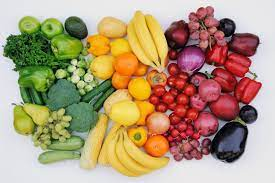

Фрукты и овощи
Ежедневное потребление, по меньшей мере, 400 г, или пяти порций, фруктов и овощей снижает риск развития НИЗ (2) и помогает обеспечить ежедневное поступление клетчатки.
Потребление фруктов и овощей можно улучшить. Для этого необходимо:
- всегда включать в рацион овощи;
- употреблять в качестве закуски свежие фрукты и овощи;
- потреблять сезонные фрукты и овощи; и
- потреблять разнообразные фрукты и овощи.
